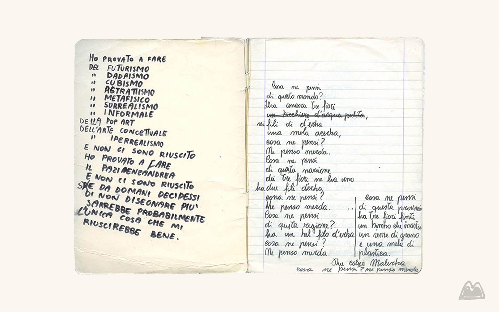
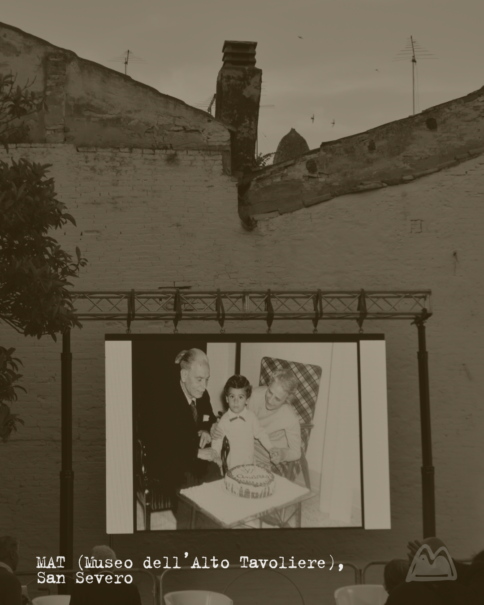
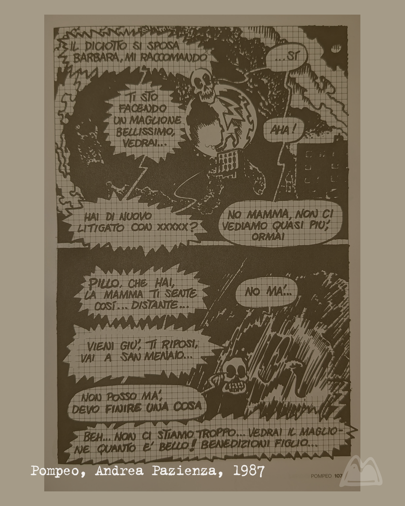

Paz in provincia
Il cielo di questo maggio mi è parso spesso bianco. Nel pomeriggio del 23, invece, un azzurro profondo delimita le mura della corte del MAT (Museo dell’Alto Tavoliere), insieme a sprazzi di nuvole affusolate. Siamo stati al primo ciclo di incontri culturali organizzati dalla Regione Puglia per ricordare la nascita di uno dei suoi compaesani più geniali: Andrea Pazienza, Paz70, per l'appunto.
Paz, il vecchio Paz — come lo chiamavano a Montepulciano — avrebbe compiuto settant’anni quest’anno, ma già in vita aveva intuito che non sarebbe invecchiato molto. Sullo schermo di proiezione, al centro della corte, vengono mostrate fotografie, lettere, pagine di diario, disegni e poesie che possiamo ora consultare sul sito ufficiale curato dai fratelli di Andrea, Mariella e Michele, e vedere dal vivo nella mostra al MAXXI.

A dialogare ci sono Stefano Cristante, sociologo e autore di Andrea Pazienza e l’arte del fuggiasco. La sovversione della letteratura grafica di un genio del Novecento, e gli amici d’infanzia Enrico Fraccacreta e Luigi Damiani.
Tra i bellissimi interventi, provo a riportare le parole di Enrico Fraccacreta, poeta anche lui di San Severo, poiché risuonano incredibilmente familiari:
«Da ragazzi eravamo soliti stare nella piazza al centro della cittadina, che ha la forma di un’ellissi. Un pomeriggio notammo un nostro compaesano che camminava con un’andatura particolare, con le gambe in avanti e la testa all'indietro. C’era poi un’incredibile puntualità nel seguire un percorso che partiva dall’ellissi della piazzetta del centro storico per poi tornare al punto di partenza. Andrea un giorno portò un cronometro e per più pomeriggi confermammo che i minuti erano sempre gli stessi. Così era Andrea: infiammava la realtà e le nostre idee per farci divertire. Nella sua altitudine, stava con noi.»
In questo piccolo aneddoto c’è già molto, tantissimo, della molteplicità di Pazienza come persona e come artista, e di ciò che di lui affascina e intenerisce: in tutto il suo operato vi è un intreccio di umanità, di voci e volti intimi della sua esistenza che sono simili e incredibilmente attuali a quelli di noi tutti.

«San Severo, la città del mio pensiero, dove prospera la vite e l’inverno è alquanto mite.»
(Sturiellet)
C’è la piccola e bruna realtà provinciale, la San Severo degli anni ‘50, che da un acquerellista e un’insegnante di educazione tecnica tira fuori un bambino che ad appena diciotto mesi disegna dettagliatamente un orso per avere l’attenzione dei genitori. Da questo bisogno d’amore di bimbo perenne si alimenta il genio di Paz per tutta la sua esistenza: breve, sì, ma incredibilmente prolifica.
A questo desiderio si aggiunge una forte componente immaginifica, propria di chi nasce e si forma nel tempo dilatato della provincia; quella pronta attenzione e curiosità che fa da antidoto a un tedio incredibile quando, senza gli svaghi della grande città, si sta più che bene nei pomeriggi passati in una piazzetta soleggiata con la società segreta degli amici, una seconda famiglia.
Questo episodio richiama un Andrea ragazzo come ce ne possono essere molti. Nella loro altitudine, questi giovani crescono nella realtà di terre bistrattate, mal comprese e di volta in volta abbandonate, mete appetibili solo per un turismo che le abbellisce e ne nasconde alla buona il marcio. Luoghi che si incollano addosso e non ti lasciano mai andare davvero, con la loro bellezza tremenda; da essi sboccia spesso una sensibilità singolare, delicata perché cristallina, e forte perché ha imparato — e deve imparare — a fare i conti con tutto il resto.
E non dimentichiamoci del suo linguaggio identitario, con cui il genio spande e piega a piacimento la realtà.

L’istantaneità spontanea di Paz, che nel suo tratto versatile unisce il comico e il tragico nello spazio di una sola tavola, derivava infatti anche dal dialetto — in molti ambienti pretesto di marginalizzazione culturale per chi "emigra" — assorbito durante la sua formazione (che non parte da Pescara, ma dagli anni dell'infanzia a San Severo).
«La vita è fatta a scale, c’è chi scende, c’è chi casca e si fa male.»
(Intervista, Lucca, 1984)
Paz però corre, è andato via anche lui: prima a Pescara, dove continua la sua formazione confrontandosi con una realtà fortemente artistica e grazie all'amicizia con Stefano Tamburini e Tanino Liberatore; poi sarà la volta del DAMS a Bologna, che stravolge, infuoca e dà inizio alla sua fama di fumettista. A Roma collabora con riviste underground che hanno fatto la storia degli anni ‘70-‘80, come Il Male, Il Cannibale e Frigidaire, di cui è stato redattore insieme a Tamburini e Vincenzo Sparagna.
Ogni estate tornava giù non appena poteva, seguendo il richiamo di sua madre Giuliana, come illustra in alcune struggenti tavole di Pompeo. Girovaga in sella alla sua Yamaha SRX600 per le strade assolate della Capitanata e ne combina di tutti i colori nel campeggio di Calenella, come raccontano i molti che l’hanno conosciuto su quelle spiagge. Infine, Montepulciano.
Ricordare Andrea nella nostra provincia è un po’ come reclamare dalla terra un’intimità che perdura nel vissuto, sebbene distante negli anni, ma straordinariamente comune. Paz, tuttavia, non può appartenere mai a un solo luogo, poiché è un’emozione ubiqua, uno spunto per ragionare sulla creatività pura e su come l’arte possa essere il magma generativo della materia stessa della vita.
Eppure, pensando al significato della disciplina odonomastica (lo studio storico e culturale dei nomi delle vie) e al legame quasi ancestrale tra nome e luogo, non posso non pensare al lungomare di San Menaio a lui dedicato e a come Paz sia, da sempre, la figura che meglio racconta quelle rive che amiamo fin da bambini. Ogni volta ritorna come le rondini: sosta per un po’ all’ombra di un pino o di un ulivo, per poi imboccare subito le scalette scoscese che portano in spiaggia. E, se non fa brutto tempo, possiamo vederlo trasformarsi in quella sfera rossa che d'estate tinge tutto di rosa e casca — sì, senza dolore — nel mare.
Noi della redazione di Paesà Rivista abbiamo partecipato a Paz70, il ciclo di incontri per il settantesimo anniversario dalla nascita di Paz. Oltre ad ascoltare i contributi preziosi di chi l'ha conosciuto direttamente o l'ha studiato, come Enrico Fraccacreta e Stefano Cristante, siamo venuti a conoscenza di una splendida notizia per gli appassionati di Pazienza e di arte e cultura in generale: la Biblioteca La Magna Capitana riaprirà presto e metterà a disposizione dei lettori diversi volumi scritti da Pazienza o dedicati a lui.
«Io sono un uomo molto fortunato
perché ho capito il mio ruolo nella vita,
ho osservato la morte con i miei occhi indiscreti,
ho visto ieri una cagna partorire
e ho conosciuto i venti e le tempeste,
mille formiche arrancare sul mio corpo, io
ho visto sogni frantumarsi, realtà violente e fiori.
Son morto più volte per aprirmi alla vita.
[...]»
Seguici sulla nostra pagina Instagram per non perdere neanche un articolo
@rivista.paesa